comparaison_one_state_02
s01_CFD_one_state.Rmd
library(SmoothPLS)
#> Warning: replacing previous import 'fda::matplot' by 'graphics::matplot' when
#> loading 'SmoothPLS'
#> Warning: replacing previous import 'pls::loadings' by 'stats::loadings' when
#> loading 'SmoothPLS'
#> Warning: replacing previous import 'dplyr::lag' by 'stats::lag' when loading
#> 'SmoothPLS'
#> Warning: replacing previous import 'dplyr::filter' by 'stats::filter' when
#> loading 'SmoothPLS'
#library(ggplot2)This vignette show the comparison for a one state Categorical Functional Data (CFD) between the naive PLS, Functional PLS and Smooth PLS.
Parameters
nind = 100 # number of individuals (train set)
start = 0 # First time
end = 100 # end time
lambda_0 = 0.2 # Exponential law parameter for state 0
lambda_1 = 0.1 # Exponential law parameter for state 1
prob_start = 0.5 # Probability of starting with state 1
curve_type = 'cat'
TTRatio = 0.2 # Train Test Ratio means we have floor(nind*TTRatio/(1-TTRatio))
# individuals in the test set
NotS_ratio = 0.2 # noise variance over total variance for Y
beta_0_real=5.4321 # Intercept value for the link between X(t) and Y
nbasis = 10 # number of basis functions
norder = 4 # 4 for cubic splines basis
beta_real_func = beta_1_real_func # link between X(t) and Y
regul_time = seq(start, end, 5) # regularisation time sequence
regul_time_0 = seq(start, end, 1)
int_mode = 1 # in case of integration errors.Data creation
df & df_test
Here we create some data to work with :
df = generate_X_df(nind = nind, start = start, end = end, curve_type = 'cat',
lambda_0 = lambda_0, lambda_1 = lambda_1,
prob_start = prob_start)
head(df)
#> id time state
#> 1 1 0.000000 0
#> 2 1 2.883051 1
#> 3 1 16.173600 0
#> 4 1 16.331487 1
#> 5 1 16.893597 0
#> 6 1 18.476103 1
nind_test = number_of_test_id(TTRatio = TTRatio, nind = nind)
df_test = generate_X_df(nind = nind_test, start = start, end = end,
curve_type = 'cat', lambda_0 = lambda_0, lambda_1 = lambda_1,
prob_start = prob_start)
names(df)
#> [1] "id" "time" "state"
print(paste0("We have ", length(unique(df_test$id)), " id on test set."))
#> [1] "We have 25 id on test set."
plot_CFD_individuals(df,by_cfda = TRUE)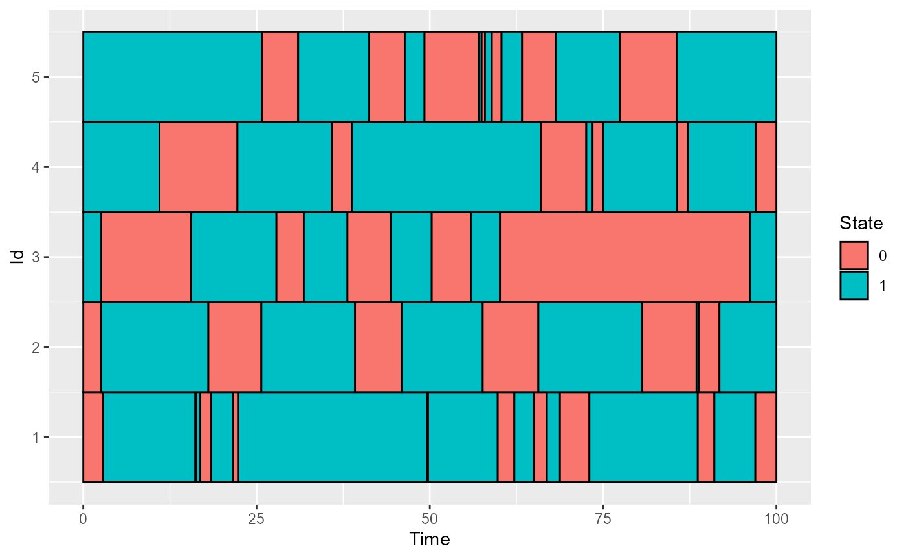
Y_df & Y_df_test
Y_df = generate_Y_df(df, curve_type = 'cat',
beta_real_func_or_list = beta_real_func,
beta_0_real, NotS_ratio, id_col = 'id', time_col = 'time')
Y_df_test = generate_Y_df(df_test, curve_type = 'cat',
beta_real_func_or_list = beta_real_func,
beta_0_real, NotS_ratio,
id_col = 'id', time_col = 'time')
Y = Y_df$Y_noised
names(Y_df)
#> [1] "id" "Y_real" "Y_noised"
Data manipulation
The following manipulation will be required form some of the following chunks.
length(regul_time)
#> [1] 21
df_regul = regularize_time_series(df, time_seq = regul_time,
curve_type = curve_type)
df_wide = convert_to_wide_format(df_regul)
df_test_regul = regularize_time_series(df_test, time_seq = regul_time,
curve_type = curve_type)
df_test_wide = convert_to_wide_format(df_test_regul)Basis creation
basis = create_bspline_basis(start, end, nbasis, norder)
# ORTHOGONAL
#basis = fda::create.fourier.basis(rangeval=c(start, end), nbasis=(nbasis))
plot(basis, main=paste0(nbasis, " Function basis")) # note cubic or Fourier
Naive PLS
Model
Here we perform the naive PLS on the data.
naive_pls_obj = naivePLS(df_list = df, Y = Y, curve_type_obj = 'cat',
regul_time_obj = regul_time,
id_col_obj = 'id', time_col_obj = 'time',
print_steps = TRUE, plot_rmsep = TRUE,
print_nbComp = TRUE, plot_reg_curves = TRUE)
#> ### Naive PLS ###
#> => Input format assertions.
#> => Input format assertions OK.
#> => Data formating.
#> => PLS model.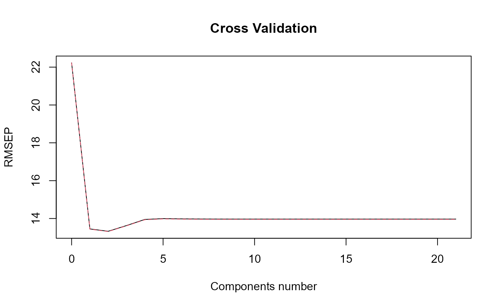
#> [1] "Optimal number of PLS components : 2"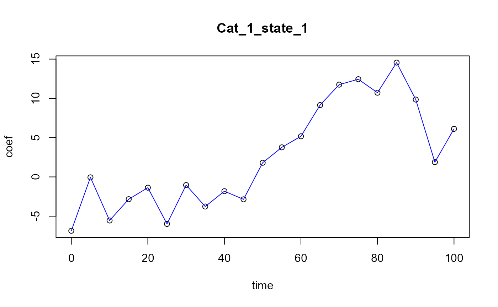
names(naive_pls_obj)
#> [1] "plsr_model" "nbCP_opti" "curves_names" "opti_reg_coef"
#> [5] "reg_obj"Regression coefficients
We can plot the coefficients :
plot(x = regul_time, y = naive_pls_obj$opti_reg_coef,
xlab='regul_time', ylab='beta coefficient value',
main="naive pls regression coefficients")
lines(x = regul_time, y = naive_pls_obj$opti_reg_coef, col='blue')
lines(x=start:end, y=beta_real_func(start:end, end), col='red')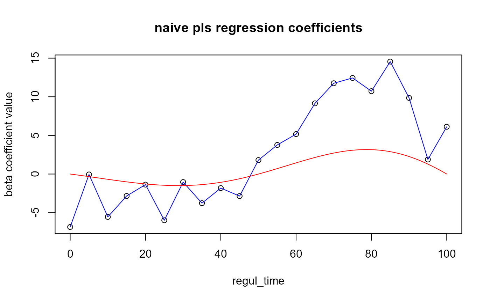
## Results On train set :
Y_hat = predict(naive_pls_obj$plsr_model,
ncomp = naive_pls_obj$nbCP_opti,
newdata = as.matrix(df_wide[, -c(1)]))
cat("R^2 \n")
#> R^2
r_squared_values(Y, Y_hat)
#> [1] 0.7535569
r_squared_values(Y_df$Y_real, Y_hat)
#> [1] 0.8121943
cat("Press \n")
#> Press
press_values(Y, Y_hat)
#> [1] 11934.96
cat("RMSEP \n")
#> RMSEP
sqrt(press_values(Y, Y_hat)/nind)
#> [1] 10.92472On test set :
Y_hat_test = predict(naive_pls_obj$plsr_model,
ncomp = naive_pls_obj$nbCP_opti,
newdata = as.matrix(df_test_wide[, -c(1)]))
cat("R^2 \n")
#> R^2
print(paste0("There is ", 100*NotS_ratio, "% of noised in Y"))
#> [1] "There is 20% of noised in Y"
cat("R^2 on Y_df_test$Y_noised \n")
#> R^2 on Y_df_test$Y_noised
r_squared_values(Y_df_test$Y_noised, Y_hat_test)
#> [1] 0.7149837
cat("R^2 on Y_df_test$Y_real \n")
#> R^2 on Y_df_test$Y_real
r_squared_values(Y_df_test$Y_real, Y_hat_test)
#> [1] 0.7061518
cat("Press \n")
#> Press
press_values(Y_df_test$Y_real, Y_hat_test)
#> [1] 3195.561
cat("RMSEP \n")
#> RMSEP
sqrt(press_values(Y_df_test$Y_real, Y_hat_test)/length(Y_hat_test))
#> [1] 11.30586FPLS
fpls_obj = funcPLS(df_list = list(df), Y = Y, basis_obj = basis,
regul_time_obj = regul_time, curve_type_obj = 'cat',
plot_rmsep = TRUE, plot_reg_curves = TRUE,
print_steps =TRUE)
#> ### Functional PLS ###
#> => Input format assertions.
#> => Input format assertions OK.
#> => Building alpha matrix.
#> => Building curve names.
#> ==> Evaluating alpha for : CatFD_1_state_1.
#> => Evaluate metrix and root_metric.
#> => plsr(Y ~ trans_alphas).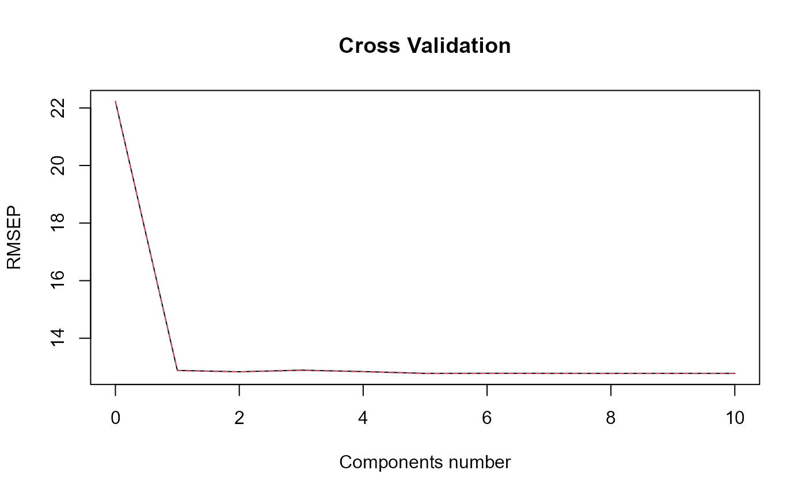
#> Optimal number of PLS components : 5 .
#> => Build Intercept and regression curves for optimal number of components.
#> ==> Build regression curve for : CatFD_1_state_1
y_lim = eval_max_min_y(f_list = list(beta_real_func,
fpls_obj$reg_obj$CatFD),
regul_time = regul_time_0)
plot(regul_time_0, beta_real_func(regul_time_0), type='l', xlab="Beta_t",
ylim = c(-2, 3.5))
plot(fpls_obj$reg_obj$CatFD, add=TRUE, col='red')
#> [1] "done"
legend("topleft",
legend = c("delta_FPLS"),
col = c("red"),
lty = 1,
lwd = 1)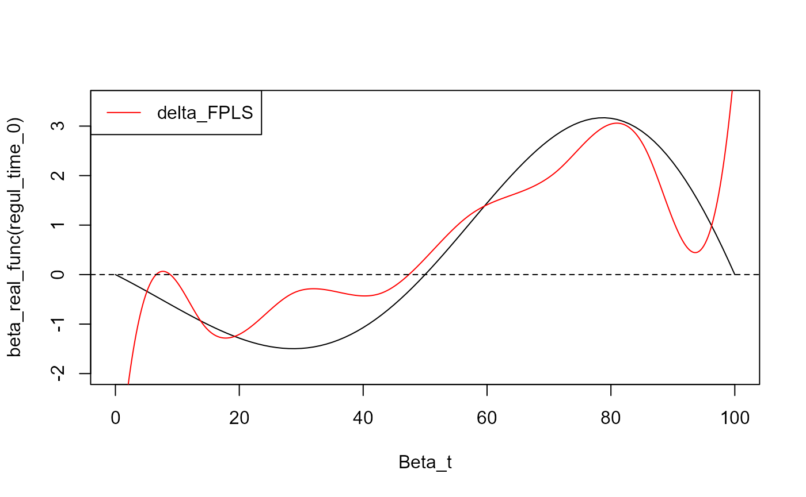
Result
Y_hat_fpls = (predict(fpls_obj$plsr_model, ncomp = fpls_obj$nbCP_opti,
newdata = fpls_obj$trans_alphas)
+ fpls_obj$reg_obj$Intercept
+ mean(Y))
sqrt(press_values(Y_df$Y_real, Y_hat_fpls)/length(Y_hat_fpls))
#> [1] 46.07352
sqrt(press_values(Y_df$Y_noised, Y_hat_fpls)/length(Y_hat_fpls))
#> [1] 45.68481
cat("NotS_ratio \n")
#> NotS_ratio
print(paste0("There is ", 100*NotS_ratio, "% of noise in Y"))
#> [1] "There is 20% of noise in Y"
cat("R^2 on Y_df_test$Y_noised \n")
#> R^2 on Y_df_test$Y_noised
r_squared_values(Y_df$Y_noised, Y_hat_fpls)
#> [1] -3.309624
cat("R^2 on Y_df_test$Y_real \n")
#> R^2 on Y_df_test$Y_real
r_squared_values(Y_df$Y_real, Y_hat_fpls)
#> [1] -3.90061
Y_hat_fpls_test = smoothPLS_predict(df_predict = df_test,
delta_list = fpls_obj$reg_obj,
curve_type = curve_type,
regul_time_obj = regul_time)
sqrt(press_values(Y_df_test$Y_real, Y_hat_fpls_test)/length(Y_hat_fpls_test))
#> [1] 7.629597
sqrt(press_values(Y_df_test$Y_noised, Y_hat_fpls_test)/length(Y_hat_fpls_test))
#> [1] 9.066582
cat("R^2 \n")
#> R^2
print(paste0("There is ", 100*NotS_ratio, "% of noise in Y"))
#> [1] "There is 20% of noise in Y"
cat("R^2 on Y_df_test$Y_noised \n")
#> R^2 on Y_df_test$Y_noised
r_squared_values(Y_df_test$Y_noised, Y_hat_fpls_test)
#> [1] 0.7584961
cat("R^2 on Y_df_test$Y_real \n")
#> R^2 on Y_df_test$Y_real
r_squared_values(Y_df_test$Y_real, Y_hat_fpls_test)
#> [1] 0.8661806Smooth PLS
spls_obj = smoothPLS(df_list = df, Y = Y, basis_obj = basis,
curve_type_obj = 'cat', orth_obj = TRUE, int_mode = 1,
print_steps = TRUE, print_nbComp = TRUE,
plot_rmsep = TRUE, plot_reg_curves = TRUE,
id_col_obj = 'id',time_col_obj = 'time',
jackknife = TRUE, validation = 'LOO')
#> ### Smooth PLS ###
#> => Input format assertions.
#> => Input format assertions OK.
#> => Orthonormalize basis.
#> => Data objects formating.
#> => Evaluate Lambda matrix.
#> ==> Lambda for : CatFD_1_state_1.
#> => PLSR model.
#> => Optimal number of PLS components : 2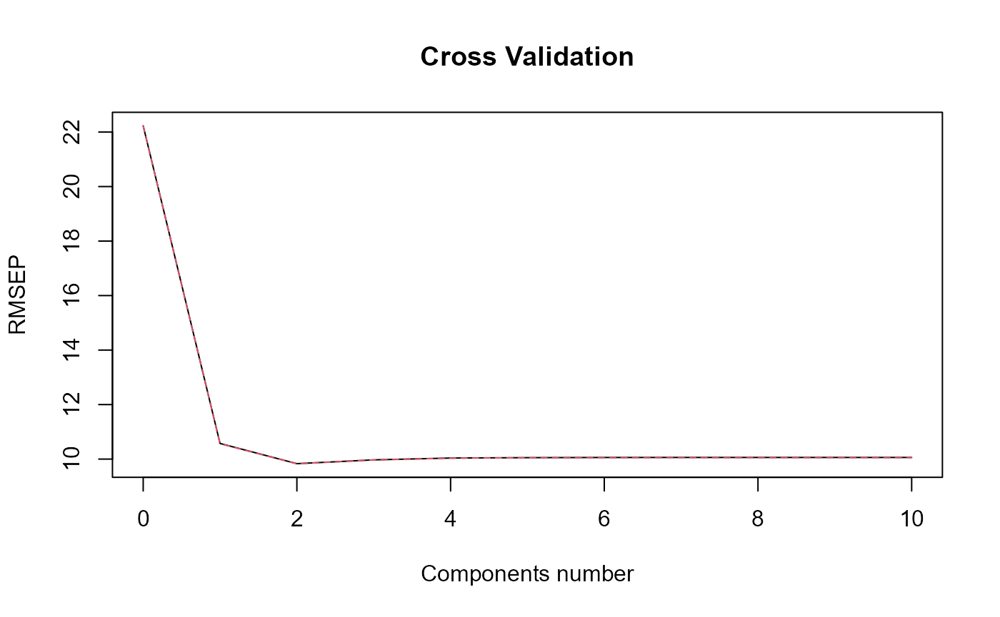
#> => Evaluate SmoothPLS functions and <w_i, p_j> coef.
#> => Build regression functions and intercept.
#> ==> Build regression curve for : CatFD_1_state_1## delta Delta Smooth_PLS
delta_0 = spls_obj$reg_obj$Intercept
delta_0
#> [1] 4.688372
delta = spls_obj$reg_obj$CatFD_1_state_1
plot(delta)#> [1] "done"
y_lim = eval_max_min_y(f_list = list(beta_real_func,
delta),
regul_time = regul_time_0)
plot(regul_time_0, beta_real_func(regul_time_0), type='l', xlab="Beta_t",
ylim = c(-2, 3.5))
plot(delta, add=TRUE, col='blue')
#> [1] "done"
legend("topleft",
legend = c("delta_SmoothPLS"),
col = c("blue"),
lty = 1,
lwd = 1)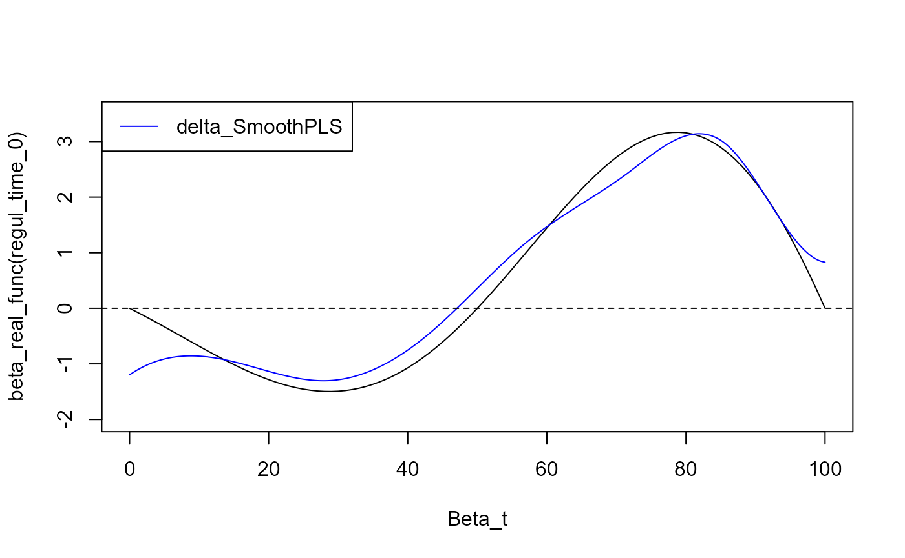
Results
#delta_0_spls
Y_hat_spls = smoothPLS_predict(df_predict = df,
delta_list = list(delta_0, delta),
curve_type = 'cat', regul_time_obj = regul_time,
int_mode = int_mode)
sqrt(press_values(Y_df$Y_real, Y_hat_spls)/length(Y_hat_spls))
#> [1] 3.07609
sqrt(press_values(Y_df$Y_noised, Y_hat_spls)/length(Y_hat_spls))
#> [1] 8.969449
cat("R^2 \n")
#> R^2
print(paste0("There is ", 100*NotS_ratio, "% of noise in Y"))
#> [1] "There is 20% of noise in Y"
cat("R^2 on Y_df_test$Y_noised \n")
#> R^2 on Y_df_test$Y_noised
r_squared_values(Y_df$Y_noised, Y_hat_spls)
#> [1] 0.8338779
cat("R^2 on Y_df_test$Y_real \n")
#> R^2 on Y_df_test$Y_real
r_squared_values(Y_df$Y_real, Y_hat_spls)
#> [1] 0.9781553
Y_hat_spls_test = smoothPLS_predict(df_predict = df_test,
delta_list = list(delta_0, delta),
curve_type = curve_type,
regul_time_obj = regul_time,
int_mode = int_mode)
sqrt(press_values(Y_df_test$Y_real, Y_hat_spls)/length(Y_hat_spls_test))
#> [1] 47.03738
sqrt(press_values(Y_df_test$Y_noised, Y_hat_spls)/length(Y_hat_spls_test))
#> [1] 47.24747
cat("R^2 \n")
#> R^2
print(paste0("There is ", 100*NotS_ratio, "% of noise in Y"))
#> [1] "There is 20% of noise in Y"
cat("R^2 on Y_df_test$Y_noised \n")
#> R^2 on Y_df_test$Y_noised
r_squared_values(Y_df_test$Y_noised, Y_hat_spls_test)
#> [1] 0.7871684
cat("R^2 on Y_df_test$Y_real \n")
#> R^2 on Y_df_test$Y_real
r_squared_values(Y_df_test$Y_real, Y_hat_spls_test)
#> [1] 0.9820812Curve comparison
cat("curve_1 : smooth PLS regression curve.\n")
#> curve_1 : smooth PLS regression curve.
cat("curve_2 : functional PLS regression curve.\n")
#> curve_2 : functional PLS regression curve.
cat("curve_3 : naive PLS regression coefficients\n")
#> curve_3 : naive PLS regression coefficients
evaluate_curves_distances(real_f = beta_real_func,
regul_time = regul_time,
fun_fd_list = list(
delta,
fpls_obj$reg_obj$CatFD,
approxfun(x = regul_time,
y = naive_pls_obj$opti_reg_coef)
)
)
#> [1] "real_f -> curve_1 / INPROD : -1.83133992755997 / DIST : 3.47340938618729"
#> [1] "real_f -> curve_2 / INPROD : -3.94412502584321 / DIST : 11.6410526992505"
#> [1] "real_f -> curve_3 / INPROD : -225.246463512732 / DIST : 54.6427740883803"
y_lim = eval_max_min_y(f_list = list(spls_obj$reg_obj$CatFD_1_state_1,
fpls_obj$reg_obj$CatFD_1_state_1,
approxfun(x = regul_time,
y = naive_pls_obj$opti_reg_coef),
beta_real_func ),
regul_time = regul_time_0)
plot(regul_time_0, beta_real_func(regul_time_0), col = 'black',
ylim = y_lim, xlab = 'Time', ylab = 'Value', type = 'l')
lines(regul_time_0, approxfun(x = regul_time,
y = naive_pls_obj$opti_reg_coef)(regul_time_0),
col = 'green')
title(paste0(names(spls_obj$reg_obj)[2], " regression curves"))
plot(spls_obj$reg_obj$CatFD_1_state_1, col = 'blue', add = TRUE)
#> [1] "done"
plot(fpls_obj$reg_obj$CatFD_1_state_1, col = 'red', add = TRUE)
#> [1] "done"
legend("topleft",
legend = c("Real curve", "NaivePLS coef",
"SmoothPLS reg curve", "FunctionalPLS reg curve"),
col = c("black", "green", "blue", "red"),
lty = 1,
lwd = 1)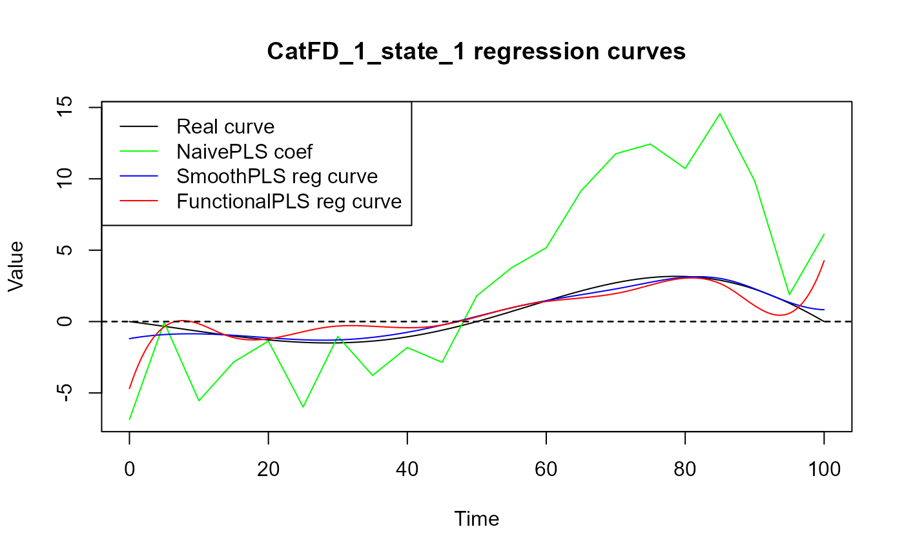
y_lim = eval_max_min_y(f_list = list(spls_obj$reg_obj$CatFD_1_state_1,
fpls_obj$reg_obj$CatFD_1_state_1,
beta_real_func ),
regul_time = regul_time_0)
plot(regul_time_0, beta_real_func(regul_time_0), type='l', ylab="Values",
xlab = 'Time', ylim = y_lim, col = 'black')
title(paste0(names(spls_obj$reg_obj)[2], " regression curves"))
plot(spls_obj$reg_obj$CatFD_1_state_1, add=TRUE, col='blue')
#> [1] "done"
plot(fpls_obj$reg_obj$CatFD_1_state_1, add=TRUE, col='red')
#> [1] "done"
legend("topleft",
legend = c("Real curve", "SmoothPLS", "FuncPLS"),
col = c("black", "blue", "red"),
lty = 1,
lwd = 1)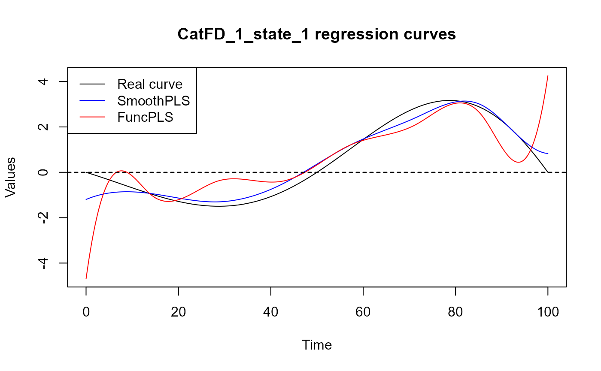
Plot the second derivatives for the smoothness :
plot(fda::deriv.fd(expr = delta, Lfdobj = 2), col='blue')
#> [1] "done"
plot(fda::deriv.fd(expr = fpls_obj$reg_obj$CatFD, Lfdobj = 2),
add=TRUE, col='red')
#> [1] "done"
title("Second derivatives")
legend("bottomleft",
legend = c("delta_SmoothPLS''", "delta_FPLS''"),
col = c("blue", "red"),
lty = 1,
lwd = 1)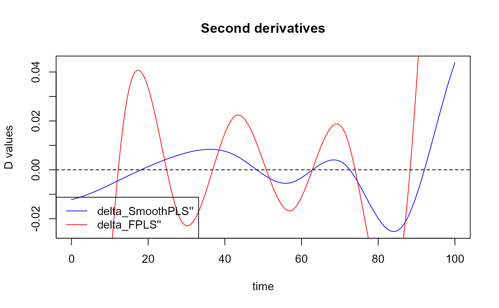
Results
train_results = data.frame(matrix(ncol = 5, nrow = 3))
colnames(train_results) = c("PRESS", "RMSE", "MAE", "R2", "var_Y")
rownames(train_results) = c("NaivePLS", "FPLS", "SmoothPLS")
test_results = train_resultsTrain set
Y_train = Y_df$Y_noised
# Naive
Y_hat = predict(naive_pls_obj$plsr_model,
ncomp = naive_pls_obj$nbCP_opti,
newdata = as.matrix(df_wide[, -c(1)]))
train_results["NaivePLS", ] = evaluate_results(Y_train, Y_hat)
# FPLS
Y_hat_fpls = (predict(fpls_obj$plsr_model, ncomp = fpls_obj$nbCP_opti,
newdata = fpls_obj$trans_alphas)
+ fpls_obj$reg_obj$Intercept
+ mean(Y))
Y_hat_fpls = smoothPLS_predict(df_predict = df,
delta_list = fpls_obj$reg_obj,
curve_type = curve_type,
regul_time_obj = regul_time,
int_mode = int_mode)
train_results["FPLS", ] = evaluate_results(Y_train, Y_hat_fpls)
# Smooth PLS
Y_hat_spls = smoothPLS_predict(df_predict = df,
delta_list = list(delta_0, delta),
curve_type = 'cat',
regul_time_obj = regul_time,
int_mode = int_mode)
train_results["SmoothPLS", ] = evaluate_results(Y_train, Y_hat_spls)
train_results["NaivePLS", "nb_cp"] = naive_pls_obj$nbCP_opti
train_results["FPLS", "nb_cp"] = fpls_obj$nbCP_opti
train_results["SmoothPLS", "nb_cp"] = spls_obj$nbCP_opti
train_results
#> PRESS RMSE MAE R2 var_Y nb_cp
#> NaivePLS 11934.955 10.924722 8.735498 0.7535569 75.35569 2
#> FPLS 11061.315 10.517279 8.430120 0.7715966 67.62400 5
#> SmoothPLS 8045.101 8.969449 7.270023 0.8338779 83.38604 2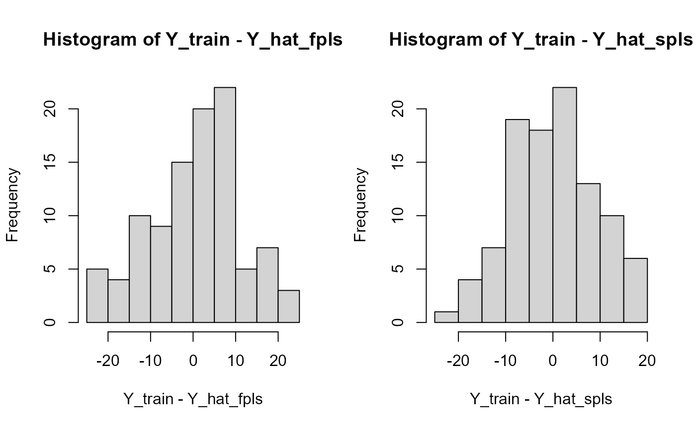
Test set
Y_test = Y_df_test$Y_noised
# Naive
Y_hat = naivePLS_predict(naive_pls_obj = naive_pls_obj,
df_predict_list = df_test,
regul_time_obj = regul_time,
curve_type_obj = 'cat')
test_results["NaivePLS", ] = evaluate_results(Y_test, Y_hat)
# FPLS
Y_hat_fpls = smoothPLS_predict(df_predict = df_test,
delta_list = fpls_obj$reg_obj,
curve_type = curve_type,
regul_time_obj = regul_time,
int_mode = int_mode)
test_results["FPLS", ] = evaluate_results(Y_test, Y_hat_fpls)
# Smooth PLS
Y_hat_spls = smoothPLS_predict(df_predict = df_test,
delta_list = list(delta_0, delta),
curve_type = curve_type,
regul_time_obj = regul_time,
int_mode = int_mode)
test_results["SmoothPLS", ] = evaluate_results(Y_test, Y_hat_spls)
test_results["NaivePLS", "nb_cp"] = naive_pls_obj$nbCP_opti
test_results["FPLS", "nb_cp"] = fpls_obj$nbCP_opti
test_results["SmoothPLS", "nb_cp"] = spls_obj$nbCP_opti
Y_hat_naivePLS = naivePLS_predict(naive_pls_obj = naive_pls_obj,
df_predict_list = df_test,
regul_time_obj = regul_time,
curve_type_obj = 'cat')
test_results
#> PRESS RMSE MAE R2 var_Y nb_cp
#> NaivePLS 2425.340 9.849548 8.317628 0.7149837 88.32737 2
#> FPLS 2055.073 9.066582 7.437308 0.7584961 91.06221 5
#> SmoothPLS 1811.086 8.511372 7.218302 0.7871684 113.47377 2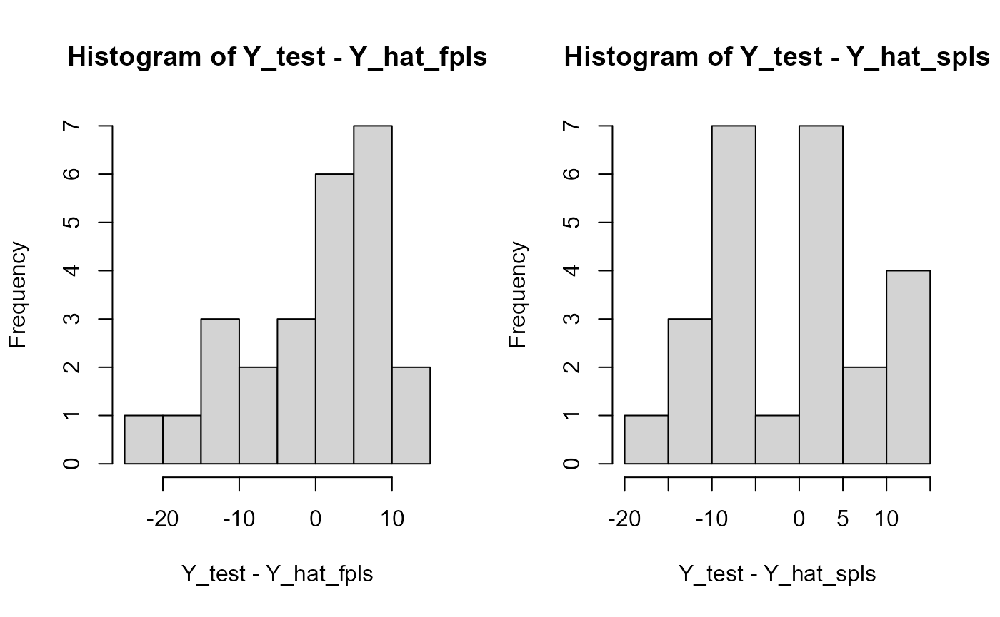
Results plots
All
plot_model_metrics_base(train_results, test_results)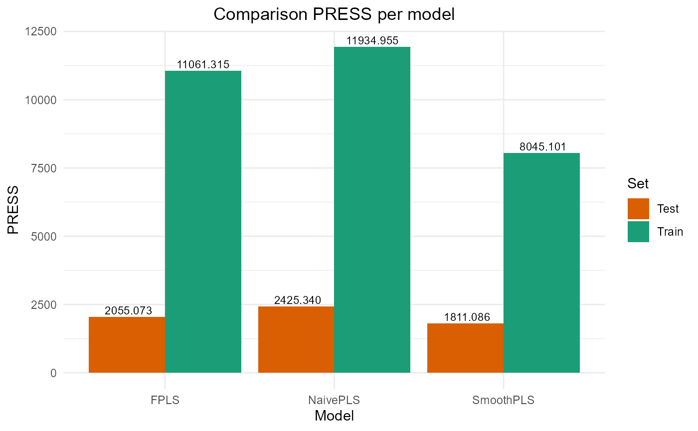
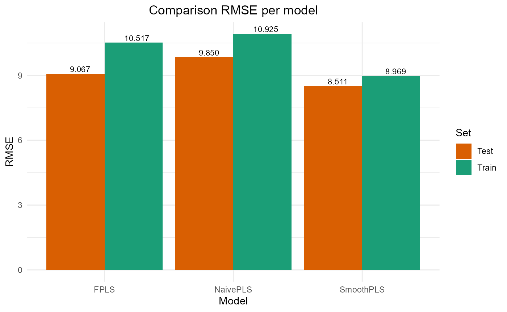
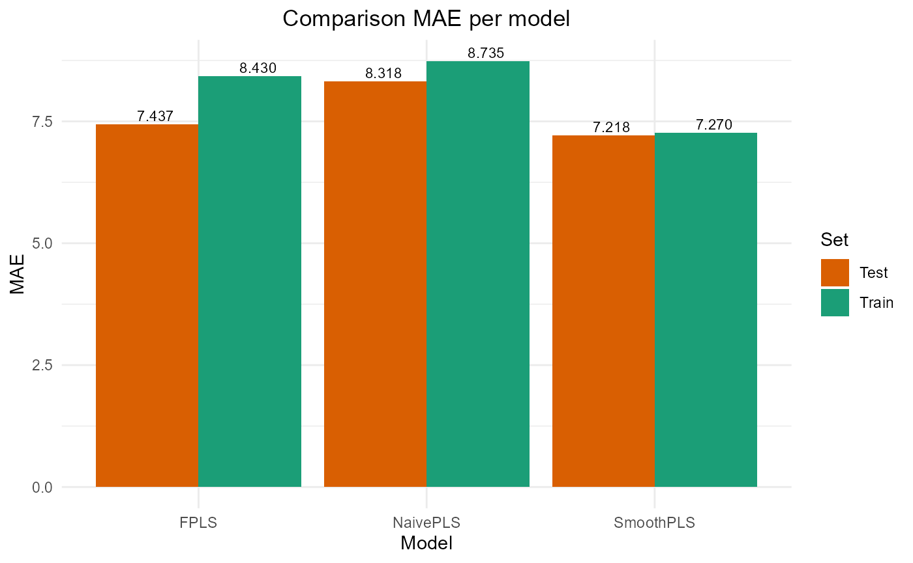
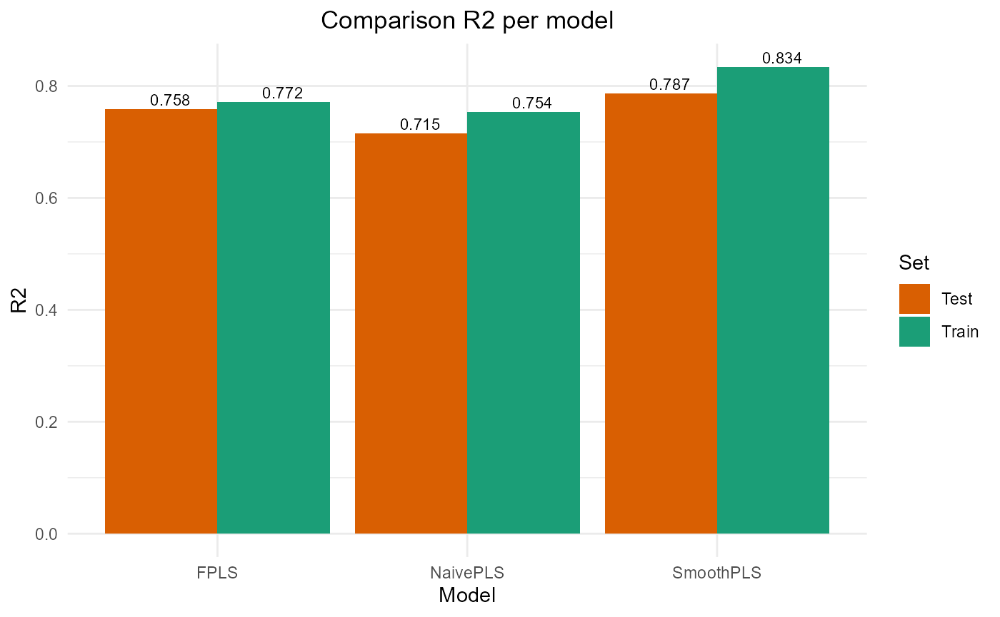
FPLS & SmoothPLS
plot_model_metrics_base(train_results, test_results,
models_to_plot = c('FPLS', 'SmoothPLS'))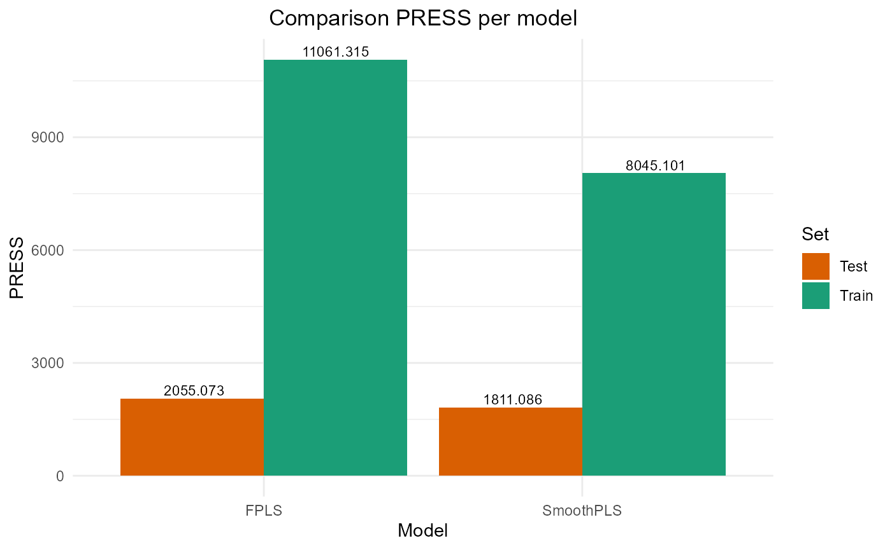
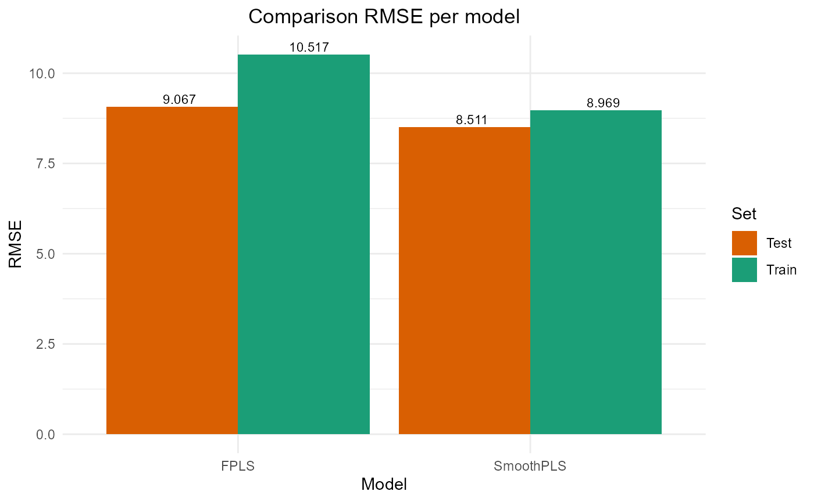
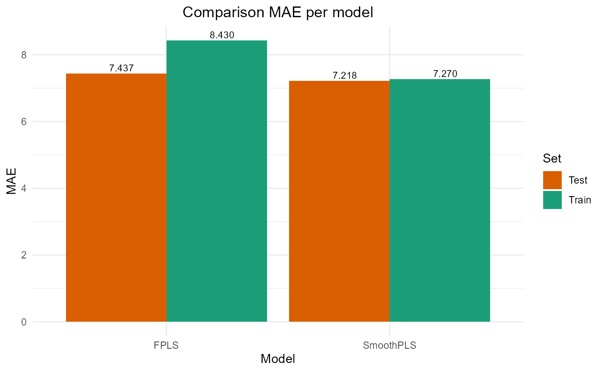
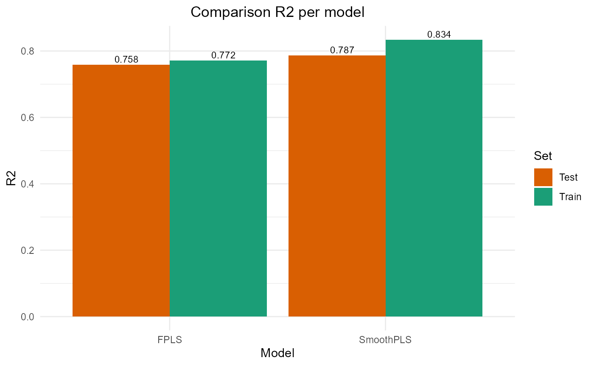
Fourier basis test
basis_f = fda::create.fourier.basis(rangeval=c(start, end), nbasis=(nbasis))
plot(basis_f, main=paste0(nbasis, " Function basis")) # note cubic or Fourier
FPLS
fpls_obj_2 = funcPLS(df_list = df, Y = Y, basis_obj = basis_f,
regul_time_obj = regul_time, curve_type_obj = curve_type,
print_steps = TRUE, plot_rmsep = TRUE,
print_nbComp = TRUE, plot_reg_curves = TRUE)
#> ### Functional PLS ###
#> => Input format assertions.
#> => Input format assertions OK.
#> => Building alpha matrix.
#> => Building curve names.
#> ==> Evaluating alpha for : CatFD_1_state_1.
#> => Evaluate metrix and root_metric.
#> => plsr(Y ~ trans_alphas).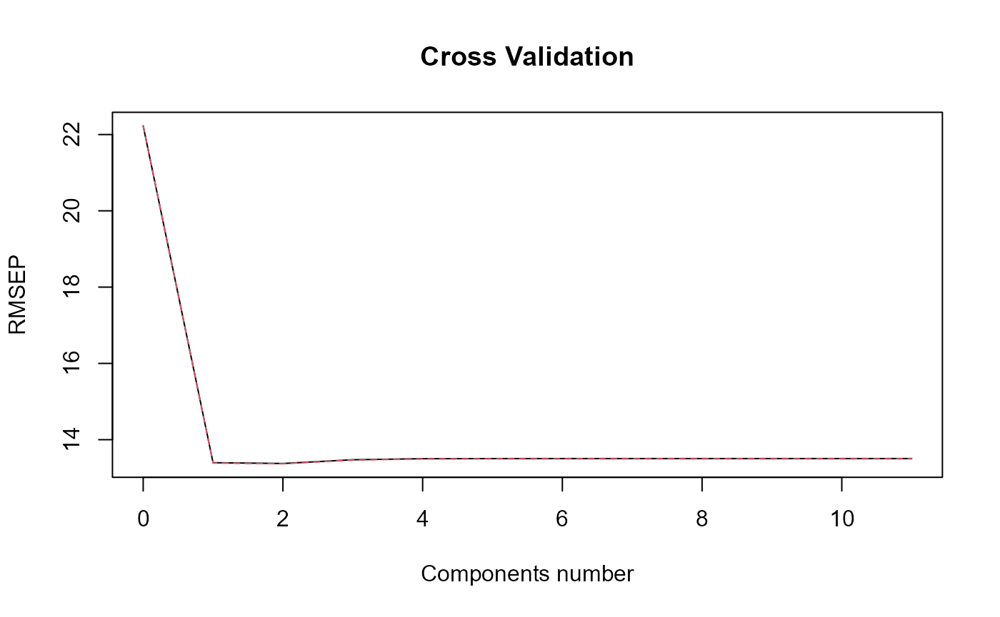
#> Optimal number of PLS components : 2 .
#> => Build Intercept and regression curves for optimal number of components.
#> ==> Build regression curve for : CatFD_1_state_1Smooth PLS
spls_obj_2 = smoothPLS(df_list = df, Y = Y, basis_obj = basis_f,
orth_obj = FALSE, curve_type_obj = curve_type,
print_steps = TRUE, plot_rmsep = TRUE,
print_nbComp = TRUE, plot_reg_curves = TRUE)
#> ### Smooth PLS ###
#> => Input format assertions.
#> => Input format assertions OK.
#> => Orthonormalize basis.
#> => Data objects formating.
#> => Evaluate Lambda matrix.
#> ==> Lambda for : CatFD_1_state_1.
#> => PLSR model.
#> => Optimal number of PLS components : 2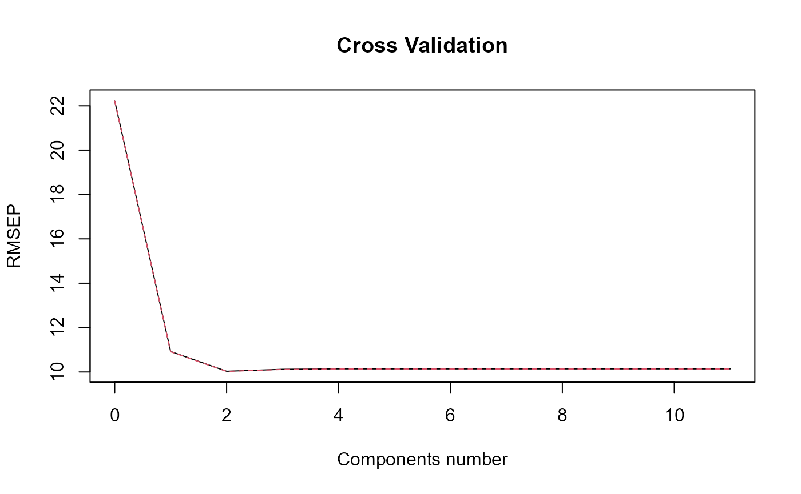
#> => Evaluate SmoothPLS functions and <w_i, p_j> coef.
#> => Build regression functions and intercept.
#> ==> Build regression curve for : CatFD_1_state_1
delta_0_2 = spls_obj_2$reg_obj$Intercept
delta_2 = spls_obj_2$reg_obj$CatFD_1_state_1
plot(delta_2)#> [1] "done"Curve comparison
plot(regul_time_0, beta_real_func(regul_time_0), type='l', xlab="Beta_t",
ylim = c(-2, 3.5))
plot(delta_2, add=TRUE, col='blue')
#> [1] "done"
plot(fpls_obj_2$reg_obj$CatFD, add=TRUE, col='red')
#> [1] "done"
legend("topleft",
legend = c("delta_SmoothPLS", "delta_FPLS"),
col = c("blue", "red"),
lty = 1,
lwd = 1)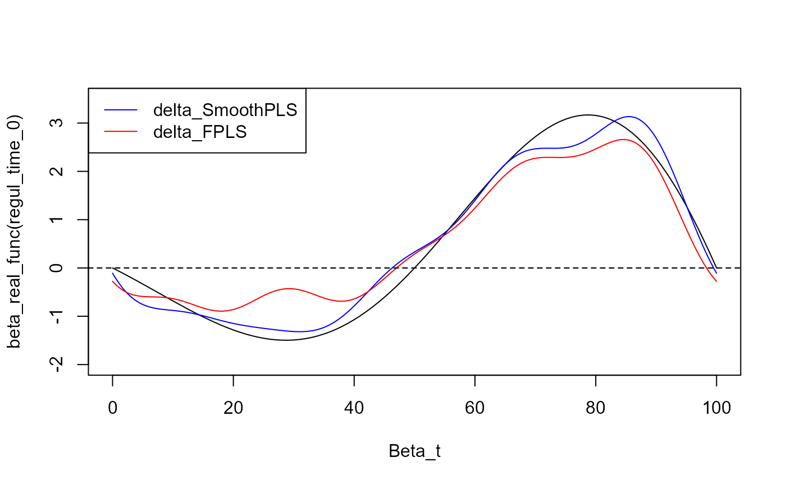
evaluate_curves_distances(real_f = beta_real_func,
regul_time = regul_time,
fun_fd_list = list(delta_2,
fpls_obj_2$reg_obj$CatFD))
#> [1] "real_f -> curve_1 / INPROD : -2.22300226853528 / DIST : 2.77040137597071"
#> [1] "real_f -> curve_2 / INPROD : -3.27136626327646 / DIST : 4.96953315597249"
cat("curve_1 : smooth PLS regression curve.\n")
#> curve_1 : smooth PLS regression curve.
cat("curve_2 : functional PLS regression curve.\n")
#> curve_2 : functional PLS regression curve.
cat("curve_3 : naive PLS regression coefficients\n")
#> curve_3 : naive PLS regression coefficients
evaluate_curves_distances(real_f = beta_real_func,
regul_time = regul_time,
fun_fd_list = list(
spls_obj_2$reg_obj$CatFD_1_state_1,
fpls_obj_2$reg_obj$CatFD_1_state_1,
approxfun(x = regul_time,
y = naive_pls_obj$opti_reg_coef)
)
)
#> [1] "real_f -> curve_1 / INPROD : -2.22300226853528 / DIST : 2.77040137597071"
#> [1] "real_f -> curve_2 / INPROD : -3.27136626327646 / DIST : 4.96953315597249"
#> [1] "real_f -> curve_3 / INPROD : -225.246463512732 / DIST : 54.6427740883803"
y_lim = eval_max_min_y(f_list = list(spls_obj_2$reg_obj$CatFD_1_state_1,
fpls_obj_2$reg_obj$CatFD_1_state_1,
approxfun(x = regul_time,
y = naive_pls_obj$opti_reg_coef),
beta_real_func ),
regul_time = regul_time_0)
plot(regul_time_0, beta_real_func(regul_time_0), col = 'black',
ylim = y_lim, xlab = 'Time', ylab = 'Value', type = 'l')
lines(regul_time_0, approxfun(x = regul_time,
y = naive_pls_obj$opti_reg_coef)(regul_time_0),
col = 'green')
title(paste0(names(spls_obj_2$reg_obj)[2], " regression curves"))
plot(spls_obj_2$reg_obj$CatFD_1_state_1, col = 'blue', add = TRUE)
#> [1] "done"
plot(fpls_obj_2$reg_obj$CatFD_1_state_1, col = 'red', add = TRUE)
#> [1] "done"
legend("topleft",
legend = c("Real curve", "NaivePLS coef",
"SmoothPLS reg curve", "FunctionalPLS reg curve"),
col = c("black", "green", "blue", "red"),
lty = 1,
lwd = 1)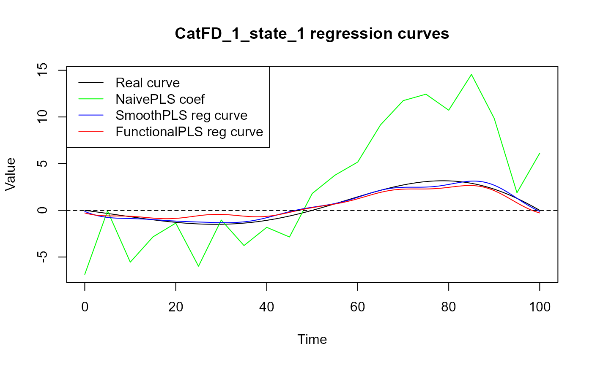
y_lim = eval_max_min_y(f_list = list(spls_obj_2$reg_obj$CatFD_1_state_1,
fpls_obj_2$reg_obj$CatFD_1_state_1,
beta_real_func),
regul_time = regul_time_0)
plot(regul_time_0, beta_real_func(regul_time_0), type='l', ylab="Values",
xlab = 'Time', ylim = y_lim, col = 'black')
title(paste0(names(spls_obj_2$reg_obj)[2], " regression curves"))
plot(spls_obj_2$reg_obj$CatFD_1_state_1, add=TRUE, col='blue')
#> [1] "done"
plot(fpls_obj_2$reg_obj$CatFD_1_state_1, add=TRUE, col='red')
#> [1] "done"
legend("topleft",
legend = c("Real curve", "SmoothPLS", "FuncPLS"),
col = c("black", "blue", "red"),
lty = 1,
lwd = 1)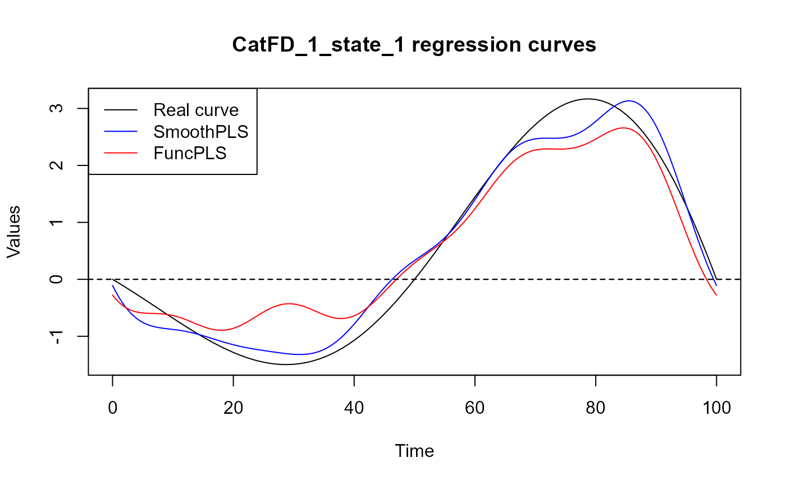
Results
train_results_f = data.frame(matrix(ncol = 5, nrow = 3))
colnames(train_results_f) = c("PRESS", "RMSE", "MAE", "R2", "var_Y")
rownames(train_results_f) = c("NaivePLS", "FPLS", "SmoothPLS")
test_results_f = train_results_fTrain set
Y_train = Y_df$Y_noised
# Naive
Y_hat = predict(naive_pls_obj$plsr_model,
ncomp = naive_pls_obj$nbCP_opti,
newdata = as.matrix(df_wide[, -c(1)]))
train_results_f["NaivePLS", ] = evaluate_results(Y_train, Y_hat)
# FPLS
Y_hat_fpls = (predict(fpls_obj_2$plsr_model, ncomp = fpls_obj_2$nbCP_opti,
newdata = fpls_obj_2$trans_alphas)
+ fpls_obj_2$reg_obj$Intercept
+ mean(Y))
train_results_f["FPLS", ] = evaluate_results(Y_train, Y_hat_fpls)
# Smooth PLS
Y_hat_spls = smoothPLS_predict(df_predict_list = df,
delta_list = list(delta_0_2, delta_2),
curve_type = 'cat',
int_mode = int_mode)
train_results_f["SmoothPLS", ] = evaluate_results(Y_train, Y_hat_spls)
train_results_f["NaivePLS", "nb_cp"] = naive_pls_obj$nbCP_opti
train_results_f["FPLS", "nb_cp"] = fpls_obj$nbCP_opti
train_results_f["SmoothPLS", "nb_cp"] = spls_obj$nbCP_opti
train_results_f
#> PRESS RMSE MAE R2 var_Y nb_cp
#> NaivePLS 11934.955 10.924722 8.735498 0.7535569 75.35569 2
#> FPLS 226721.578 47.615289 46.088442 -3.6815395 70.45743 5
#> SmoothPLS 8160.272 9.033422 7.238715 0.8314998 83.15078 2Test set
Y_test = Y_df_test$Y_noised
# Naive
Y_hat = predict(naive_pls_obj$plsr_model,
ncomp = naive_pls_obj$nbCP_opti,
newdata = as.matrix(df_test_wide[, -c(1)]))
test_results_f["NaivePLS", ] = evaluate_results(Y_test, Y_hat)
# FPLS
Y_hat_fpls = smoothPLS_predict(df_predict = df_test,
delta_list = fpls_obj_2$reg_obj,
curve_type = curve_type)
test_results_f["FPLS", ] = evaluate_results(Y_test, Y_hat_fpls)
# Smooth PLS
Y_hat_spls_f = smoothPLS_predict(df_predict = df_test,
delta_list = list(delta_0_2, delta_2),
curve_type = curve_type,
int_mode = int_mode)
test_results_f["SmoothPLS", ] = evaluate_results(Y_test, Y_hat_spls_f)
test_results_f["NaivePLS", "nb_cp"] = naive_pls_obj$nbCP_opti
test_results_f["FPLS", "nb_cp"] = fpls_obj$nbCP_opti
test_results_f["SmoothPLS", "nb_cp"] = spls_obj$nbCP_opti
test_results_f
#> PRESS RMSE MAE R2 var_Y nb_cp
#> NaivePLS 2425.340 9.849548 8.317628 0.7149837 88.32737 2
#> FPLS 1933.648 8.794652 7.583591 0.7727654 81.92490 5
#> SmoothPLS 1827.665 8.550240 7.122234 0.7852201 113.37052 2Plot Fourier Results
plot_model_metrics_base(train_results_f, test_results_f)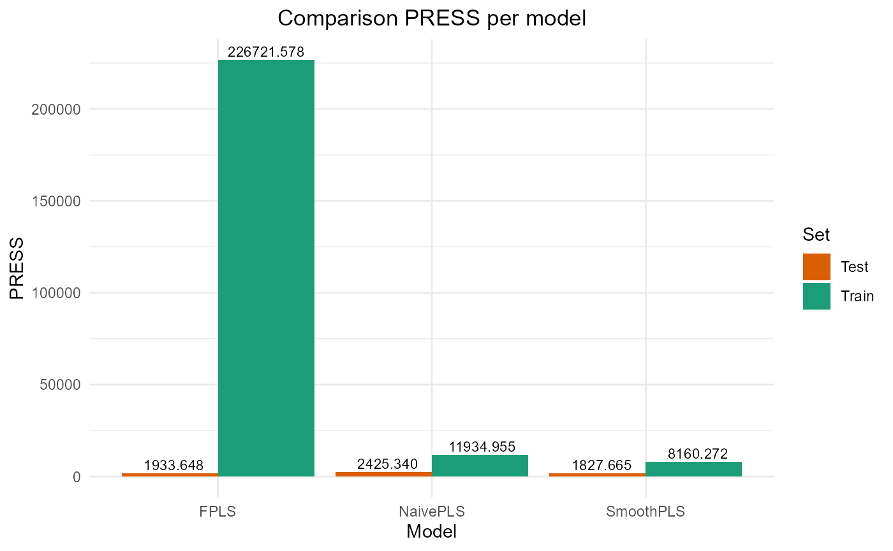
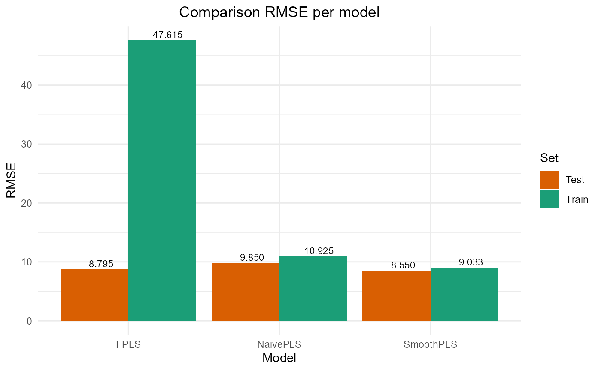
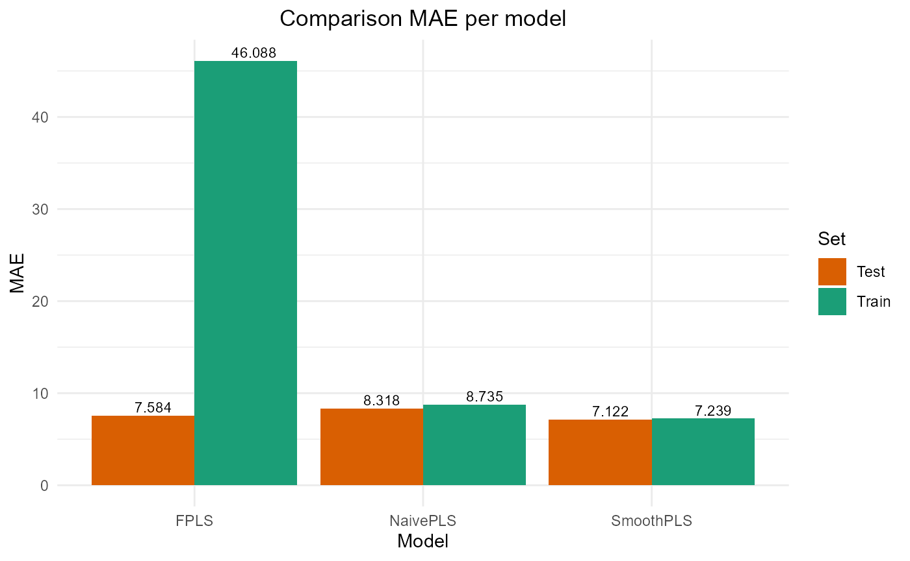
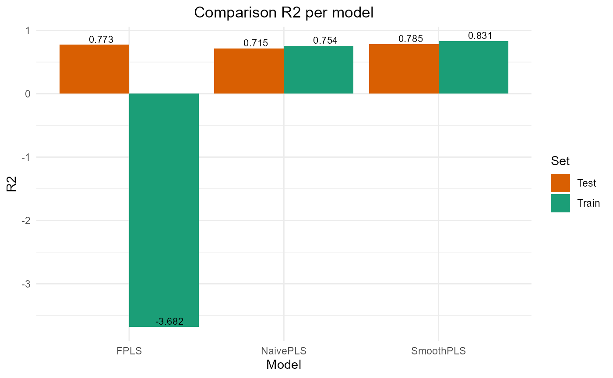
plot_model_metrics_base(train_results_f, test_results_f,
models_to_plot = c('FPLS', 'SmoothPLS'))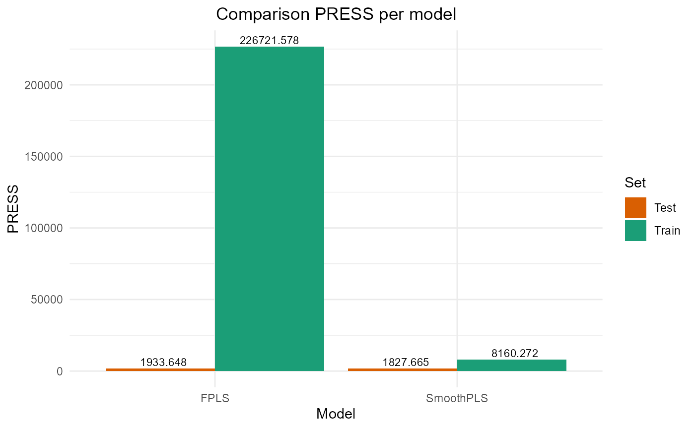
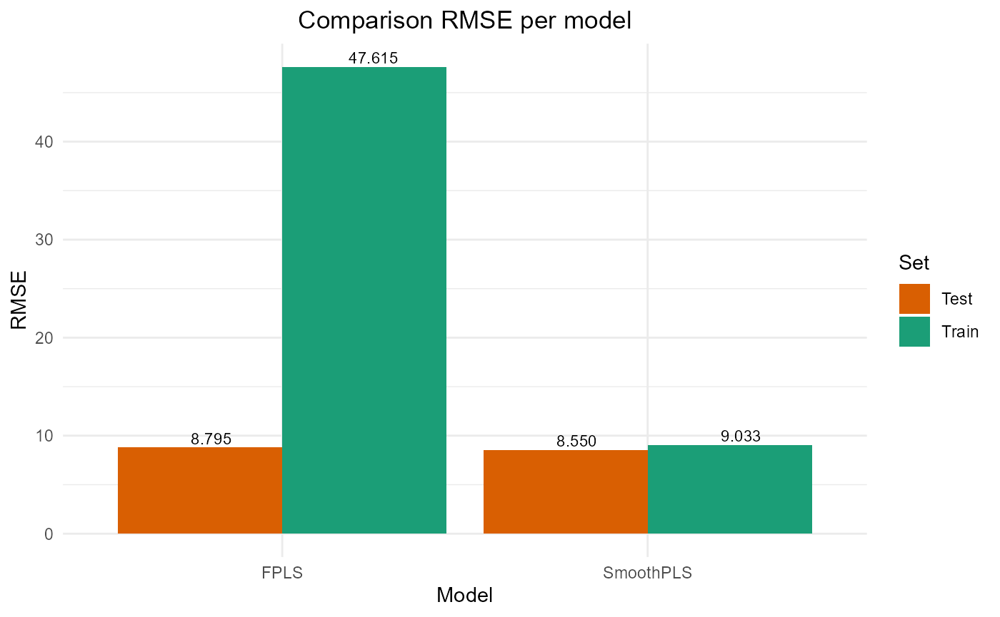
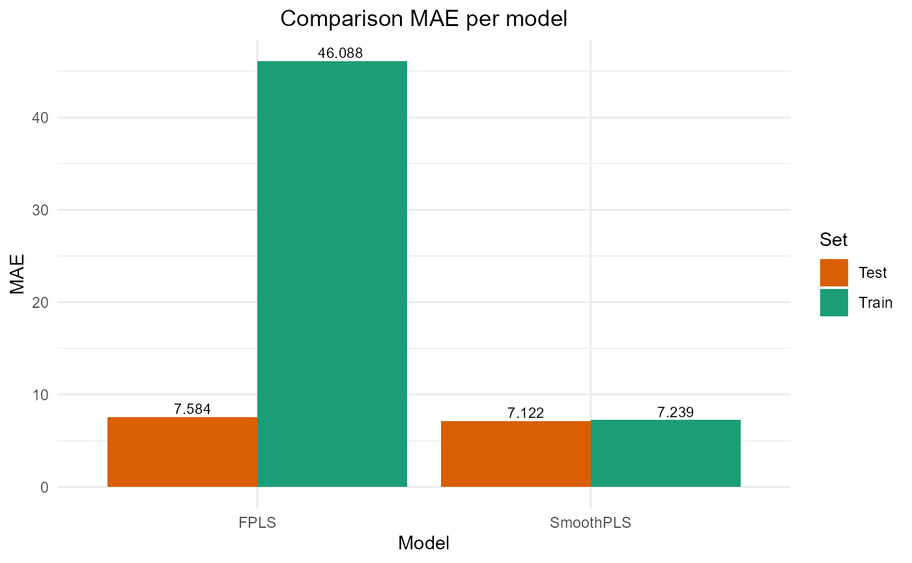
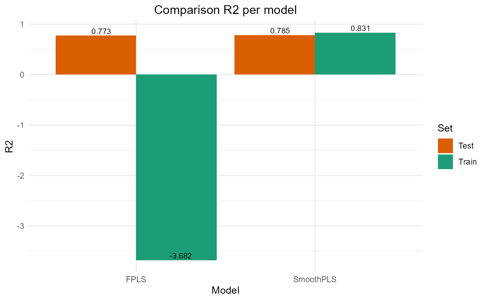